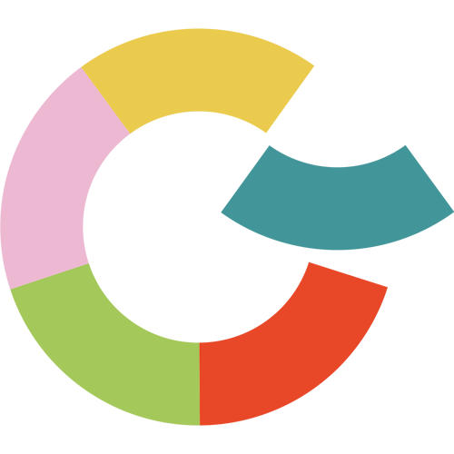

Latinerkvarteret er en stemningsfuld og unik perle i det centrale og hyggelige Odense. Gaderne blomstrer med kunst og kultur samt butikker og restauranter, som hver især har et unikt præg på bybilledet. Variationen i udvalg af butikker og kulturarrangementer som Blomsterfestival og H.C. Andersen festival drager folk med alle interesser og alle aldre til området. I latinerkvarteret er der noget for enhver smag. City bussen er gratis og tager dig og dine venner, din kæreste eller din familie direkte ind til midten af eventyret hvor i kan forkæle alle sanser.